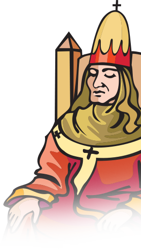

20C 실존주의 철학의 선구자
기독교 위대한 사상가
서로마 제국 몰락 이후부터 15세기 르네상스 시대까지의 철학적 사변을 말하는 중세 철학은 기독교 신학과 밀접합니다.
중세철학은 전반기의 교부철학, 후반기의 스콜라 철학으로 나누어 볼 수 있습니다.
대표적인 교부 철학자인 아우구스티누스(354-430)는 기독교가 세계 종교로 거듭나는 이론적 기초를 다졌습니다. 토마스 아퀴나스(1225~1274)가 탄생할 때까지 약 800년간 아우구스티누스의 사상은 교회를 지탱하는 든든한 버팀목이었습니다.
중세 후기에는 스콜라 철학이 등장합니다.
대표적인 스콜라 철학자 토마스 아퀴나스는 신학과 철학, 신앙과 이성, 자연과 인간을 조화시킴으로써 기독교 교리를 철학적으로 논증하고 합리적으로 설명하고자 했습니다.
아우구스티누스는 18세에 키케로의 『호르텐시우스』를 읽은 후 진리를 추구하기 시작했습니다.
30세에 新플라톤 학파를 접한 후 ‘악(惡)’의 문제를 고민하다가 33세 그리스도교로 회심 후
인간적인 욕구를 끊고 진리에 헌신하기로 결단합니다. 그리스도교 초기 교부(敎父 )들 중에서
가장 많은 저작을 남겼으며, 100권이 넘는 그의 책 중 가장 많이 사랑 받고 알려진 작품이 바로 『고백록』입니다.

정치사상가
(1469-1527)
리비우스의 『로마사』는 마키아벨리의 삶에 막대한 영향을 주었습니다.
마키아벨리는 공직에서 파직당한 후 피렌체 시골에 유배되어 『군주론』 과 『로마사논고』를 집필했습니다.
메디치 가문에 『군주론』을 전달해 자신의 정계복귀를 고대했지만 좌절됐습니다.
『군주론』은 『국가론』과 같은 고전을 자신만의 시각으로 재해석한 책으로
“우리 국가의 통치자들은,
그가 누가 되든지 국가의 선을 위해서는 시민이든 적이든 그들을 속일 권리를 갖는다.” 는 독창적인 주장을 펼치기도 합니다.
1559년 교황청이 『군주론』을 금서로 지정하기도 했으나,
18세기 무렵부터는 마키아벨리를 근대 민주주의와 공화주의의 선구자로 보는 해석이 많아졌습니다.